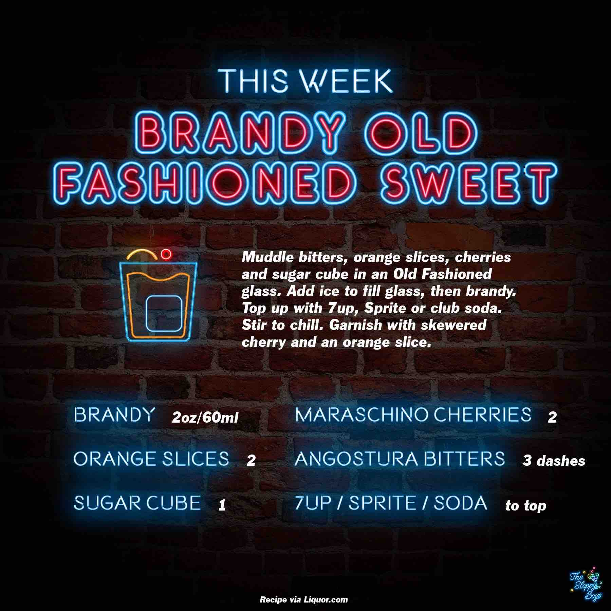

Brandy Old Fashioned Sweet
Ingredients
- Brandy (2oz/60ml)
- Orange Slices (2)
- Sugar Cube (1)
- Maraschino Cherries (2)
- Angostura Bitters (3 dashes)
- 7up/Sprite/Soda (to top)
Steps
- Muddle bitters, orange slices, cherries and sugar cube in an Old Fashioned glass.
- Add ice to fill glass, then brandy.
- Top up with 7up, Sprite or club soda.
- Stir to chill.
- Garnish with skewered cherry and an orange slice.
Notes